Foundry Stage 0 seed
On this page
Recommendation: Archive as lineage of AI SDLC, not an additional product.
On a small screen, swipe horizontally to read every column.
| Snapshot | Assessment |
|---|---|
| Supplied location ID | foundry-stage0 |
| Product family | Agent delivery |
| Implementation stage | Bootstrap archive |
| Review date | 2026-09-26 |
| Local state | not a git checkout |
Vision and the problem it addresses
Bootstrap the first self-governing Foundry repository: seed its conventions, add a Definition-of-Done workflow and make that workflow a required merge check.
Who needs it: The initial control-plane maintainer recreating the project from a seed.
The moment it becomes useful: Before automation can enforce a rule, the rule and repository have to exist. Stage 0 makes that bootstrapping exception explicit.
How it works

This diagram summarizes the inspected design. It is not evidence of a successful end-to-end deployment. For a hands-on journey, use the onboarding guide.
How well it addresses the problem
- bootstrap.sh makes manual seeding visible through commit trailers and has explicit steps to install the first gate.
- The split main/ and p0-1/ folders preserve the transition from ungoverned seed to governed change.
These are implementation strengths. Repeated use, customer demand and measured business outcomes remain separate questions.
What is missing or unproven
- Only twelve files were inventoried; no full delivery runtime or dashboard exists here.
- The script creates remote commits and PRs and alters branch protection. It is not a read-only demo or safe to run against an existing repository without review.
- The more developed implementation exists under aisdlc/foundry-program. Maintaining both as live products would create policy drift.
- The script expects previously seeded issues; bootstrap is not a complete fresh-account installer.
Smallest useful next step
Document it as an archived origin snapshot in the Foundry report. If reproducibility matters, add a dry-run fixture that validates generated files without remote writes.
Acceptance exercise: Read the script and compare generated seed/gate files to a fixture. A full verification requires a disposable GitHub repository and reviewed permissions. The script was not executed during this analysis.
This is a proposed validation exercise unless explicitly recorded as executed in VALIDATION.
Position in the portfolio
Related work: Foundry / AI SDLC, Architecture Foundry.
Read the overlap and integration decisions before merging features. Shared vocabulary does not guarantee shared IDs, permissions, storage or lifecycle semantics.
On a small screen, swipe horizontally to read every column.
| Reviewer judgment, 1–5 | Score |
|---|---|
| Effort to a credible narrow pilot | 1 |
| Potential breadth and recurrence of the need | 1 |
| Integration, operational and consequence exposure | 2 |
These are ordinal planning judgments, not completion percentages or a commercial valuation. Empty/archive projects should be parked rather than treated as active bets.
Evidence and next reading
Source references and snapshot limits · Developer / Claude onboarding · Portfolio synthesis